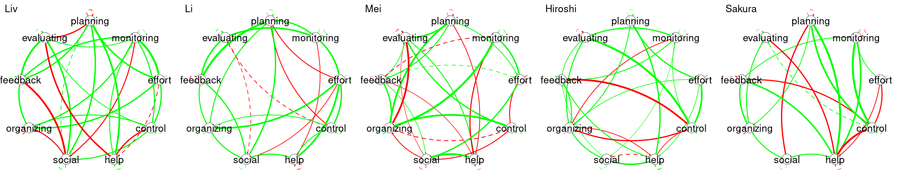

# Step 1: Load the dataset
df <- import("https://github.com/lamethods/data2/raw/main/srl/srl.RDS")
# Step 2: Define variables for the graphical VAR model
Vars <- c("planning", "monitoring", "effort", "control",
"help", "social", "organizing", "feedback", "evaluating")
# Step 3: Create a "Day" variable for each entry within a person
df <- df |>
group_by(name) |>
mutate(Day = seq_along(name)) |>
ungroup()
# Step 4: Filter the data for a specific individual named 'Grace'
Grace_Data <- df |>
filter(name == "Grace") |>
dplyr::select(all_of(Vars), Day)20 Idiographic Networks: A tutorial on Graphical Vector Autoregression and Unified Structural Equation Modeling
Abstract
This tutorial introduces the application of advanced network analysis methods, specifically Graphical Vector Autoregression (graphicalVAR) and Unified Structural Equation Modeling (uSEM), to model learning processes as complex, dynamic systems. These approaches allow exploring both temporal and contemporaneous relationships among variables within individual learners over time. The chapter begins by conceptualizing learning as a networked system and reviewing relevant literature, discussing the advantages of probabilistic network models in education. Then, a step-by-step tutorial in the R programming language is presented so readers can learn to estimate idiographic models, visualize dynamic relationships, and interpret. As such, this tutorial aims to provide researchers with tools to analyze multivariate time-series data, which is a necessary step for truly personalized interventions in educational research
1 Introduction
Network analysis provides a suite of methods for examining both static and dynamic relationships within systems. These methods reveal insights into collaborations between students or student-teacher interactions, knowledge construction on a topic, social dynamics between groups, and system-wide properties, including how these connections evolve over time [1–3]. Applications of network analysis span diverse contexts, from understanding how groups of students learn on massive online platforms [4] to identifying how a single learner evolves over time [5]. Representing elements of learning processes—such as cognitive and social aspects—within a network has become a well-established research method, encompassing various analytical approaches, including social network analysis (SNA), epistemic network analysis (ENA), ordered network analysis (ONA), and temporal network analysis (TNA) [3, 6, 7]. More recently, transition network analysis (TNA) has also emerged[7].
While much of the prior work in network analysis focuses on group-level phenomena, this chapter takes an idiographic perspective, where the primary unit of analysis is the individual learner [8]. The idiographic approach diverges from traditional nomothetic methods by emphasizing the unique patterns, processes, and dynamics that characterize a single person, thereby offering a more granular understanding of learning as a personal and evolving process [9, 10]. This focus aligns with a growing recognition of the importance of personalized education, where interventions and analyses are tailored to the distinctive needs and experiences of individuals [9, 10].
This chapter focuses on a specific type of network: probabilistic networks. These networks represent variables as nodes and the statistical relationships between them (e.g., correlations or regression) as edges. Probabilistic networks, discussed in detail in the previous book [11], have been increasingly employed to model processes as they emerge, progress, or unfold, with their elements represented as nodes [12, 13]. These networks allow researchers to understand interactions and dynamics within a process.
Here, we adopt an idiographic perspective, treating the student as the central unit of analysis. This approach examines data from a single student, continuing our exploration of individualized processes, as detailed in the chapter on idiographic machine learning [14]. In this chapter, we demonstrate how to use Graphical Vector Autoregression (GVAR) and Unified Structural Equation Modeling (uSEM) to analyze an individual’s process. We begin with a background section that defines key terms and concepts and provides a concise literature review. Following this, we provide a step-by-step tutorial using R to implement the discussed techniques.
2 Background
2.1 The cognitive process as a networked system
Representing elements of the cognitive and social processes as a network is an established research method. Such representation has afforded researchers a way to visualize the structure of these processes and to measure the magnitude of association between their elements, and to devise statistical indices that allow a precise interpretation of the resulting graphs [15]. Recent advances in network science have seen a surge in probabilistic network models, also referred to as GGMs, which are designed to examine the relationships of multivariate data or elements of a cogintive or psycholgocial process [[15]. GGMs are applied within the literature to map and visualize the dynamic relationships between processes and their elements, considering them as a complex system [15–19]. GGMs commonly estimate a partial correlation between variables while controlling for the influence of all other variables and their relationships within the system. Within these networks, two nodes are connected if the covariance of the edge cannot be explained by any other variable in the network, eliminating the possibility of confounding variables [15, 16]. Resulting outputs of these models show only significant relationships between nodes, being the weight of the significant edges proportional to the strength of the relationships, as well as whether the relationship is positive or negative, and mediation pathways (i.e., indirect relationships between two variables transmitted through one or more intermediary variables within the same network) [15].
Vector autoregression (VAR)is an extension of GGM methods has enabled the capability for modeling temporal processes, i.e., how a variable predicts another in the next time window. VAR estimates a directed network (in contrast to undirected in GGM); the nodes are variables (e.g., motivation, behavior or attitude) and the link between them are temporal relationships (a variable predicts another in the next time window) [15].
The abundance of intensive time-stamped data (e.g., time-series data) has led to the existence of enough observations from individual subjects across time using e.g., data collected with experience sampling methods, observational data and physiological data, which enabled the study of an individual as a unique case (N=1) [15, 20]. The representation and estimation of the temporal network allows researchers to study the individual phenomena, the progression of behavior, predict future behavior, as well as create relevant intervention. In other words, the network allows the idiographic assessment of the person dispositions and their temporal dynamics. The network is commonly represented by drawing an arrow from the node that represents the variable (e.g., motivation) to the variable that it predicts in the next time window of measurement (e.g., engagement) [21].
To explain it, an example is presented in Figure 20.1. We created a simulated dataset about working and achievement within an individual on a daily basis. The graph shows that motivation predicts work, as well as feeling of achievement of goals within the next day. Similarly, working predicts feeling of goal-achievement. However, engaging with work predicts slight stress the next day, and having stress negatively predicts feeling of achievement. Helping that individual could be done though offering stress management advice. Another type of network is the contemporaneous network (associative), a partial correlation network that maps the correlation between the elements of the studied phenomena within the same time window. For instance, when the subject is having comfort, he/she also eats snacks at the same time. In our study this is used to study the co-temporal association between daily events, for instance, how motivation predicts working on the task within the same day.

3 Review of Network Analysis Applications in Education Literature
Probabilistic network models, such as GGMs, have become an essential tool for examining how complex learning processes unfold and how the interconnectedness of psychological constructs contributes to enhanced learning outcomes. For instance, Malmberg et al. [22] explored how students monitor events and demonstrated that this monitoring facilitates functional regulatory behaviors during collaborative physics tasks. Their findings indicated that cycles of regulation during collaborative learning do not always coexist, revealing inherent limitations in group-level regulation. Moreover, they highlighted the temporal interplay between motivation and task monitoring, showing that motivation persists across different regulatory phases and significantly predicts how tasks are enacted.
Similarly, Zhou and Kang [23] employed network analysis to investigate collaborative problem-solving behaviors in teams during an astronomy simulation. Using multivariate autoregression, they identified temporal patterns in problem-solving behaviors, revealing how individual exploration within the simulation catalyzed group discussions and joint engagement. Their findings underscored the importance of individual reflections in driving group coordination and the construction of shared knowledge.
Closer to the methods discussed in this tutorial, vector autoregression (VAR) networks have been applied to examine students’ self-regulation. Saqr [21] demonstrated that self-regulation profiles differ significantly across individuals, with each student exhibiting a unique regulatory pattern. Importantly, none of the students conformed to the aggregate patterns observed when data were analyzed at the group level. This underscores the critical need for idiographic approaches to capture the distinctive dynamics of each learner, challenging traditional nomothetic methodologies [24].
Additional research has used network analysis to uncover how students regulate cognitive and emotional processes, both individually and in groups, across diverse learning contexts, such as language acquisition and physics education [5, 25–31]. These studies establish network analysis as a powerful and reliable framework for identifying how learners’ regulatory strategies influence motivation, engagement, and ultimately, learning outcomes.
3.1 Loading data and pre-processing
Before proceeding to the actual analysis, we will need to load the packages, import the data, and process it to prepare for the analysis. Below are the necessary packages:
tidyverse: A renowned R package for data manipulation, wrangling and visualization [32].skimr: A package to perform summary statistics and help us get an overview of the dataset and in particular the variable distributions, any missing data, and basic descriptive statistics [33].graphicalVAR: An R package which will be used for modeling and visualizing thegraphicalVARmodels as described before [34].qgraph: An R package for network visualization [35].pompom: An R package that offers an implementation of unified structural equation modeling [36].caret: Short for Classification And REgression Training,caretis a set of functions that attempt to simplify the creation and evaluation of predictive models [37].rio: A package for importing data in several formats [38].
In addition, we will import an additional R file with helper functions that we will need throughout the chapter (aux.R).
Once we have loaded the necessary R packages and dependencies, we import the dataset synthetic_Data_share.RDS (step 1). This dataset contains ESM measurements of 36 students that reported how they regulate their own learning activities including aspects like planning, monitoring their progress, seeking help, managing their environment, and reflecting on feedback. We then create a vector for the variables of interest (Vars), which includes nine SRL processes that will be the target of our the analysis (step 2).
In the next step (step 3), we create a Day variable for each student (by grouping by the name variable) using seq_along() to create sequential numbers for each time-point in the data for each individual. Next (step 4), given that we would like to analyze a single student, we will filter the data of a student, in our case, we chose Grace for analysis. In this step we also select only the specific SRL-related variables that we would like to analyze, defined by Vars, along with the new Day variable, preparing the filtered data for further analysis specific to Grace’s behaviors.
3.1.1 Exploring the data
It is always a good practice to explore the data to judge the distribution of variables, missing data or any unexpected surprises in the data. We do so using the skimr package, which provides a detailed overview of the SRL dataset, including measures like mean, median, spread, and the presence of missing values. To do so, we simply use skim(Grace_Data).
Grace_descriptives <- skim(Grace_Data)
print(Grace_descriptives)── Data Summary ────────────────────────
Values
Name Grace_Data
Number of rows 156
Number of columns 10
_______________________
Column type frequency:
numeric 10
________________________
Group variables None
── Variable type: numeric ──────────────────────────────────────────────────────
skim_variable n_missing complete_rate mean sd p0 p25 p50 p75 p100 hist
1 planning 0 1 61.7 20.4 0 54.8 64.5 74.2 100 ▂▁▃▇▂
2 monitoring 0 1 63.7 17.7 0 50.7 68.7 76.1 100 ▁▁▆▇▃
3 effort 0 1 50.6 21.9 0 36 52 68 100 ▃▆▇▇▂
4 control 0 1 43.6 26.0 0 22.6 38.7 61.3 100 ▆▇▆▃▅
5 help 0 1 75.8 16.4 25 70 80 87.5 100 ▁▁▃▇▆
6 social 0 1 45.4 18.3 0 31 48 56 100 ▂▅▇▃▁
7 organizing 0 1 62.7 16.5 0 48.1 66.7 74.1 100 ▁▁▅▇▁
8 feedback 0 1 60.8 24.4 0 42.1 62.9 80.7 100 ▁▆▆▇▇
9 evaluating 0 1 46.5 18.6 0 39.1 45.7 52.7 100 ▁▂▇▁▁
10 Day 0 1 78.5 45.2 1 39.8 78.5 117. 156 ▇▇▇▇▇The next chunk of code visualizes the data and, since it is a longitudinal repeated measure dataset, we plot the data across time. For that purpose, we reshape it into a long format using pivot_longer to organize it so that the SRL variables (e.g., planning, monitoring) are represented in a single column (variable), and their corresponding values in another column (value). We then use ggplot2, where each SRL variable is plotted on the y-axis against time (Day) is plotted on the x-axis. We apply faceting so that each SRL construct is visualized in its own subplot (Figure 20.2).
# Reshape the data to long format
Grace_data_long <- Grace_Data |>
pivot_longer(cols = Vars, # Assuming 'id' and 'interaction' are the relevant columns
names_to = "variable",
values_to = "value")
# Plot with faceting by variable
ggplot(Grace_data_long, aes(x = Day, y = value)) +
geom_line(color = "blue") +
geom_point() +
geom_smooth(method = "loess", color = "red", se = FALSE) + # Smoothing (LOESS)
facet_wrap(~variable, scales = "free_y", ncol = 3) +
theme_minimal() 
3.1.2 Stationarity
Stationarity is an important pre-requisite for graphicalVAR models which means that the data statistical properties, —e.g., mean and variance— do not change over time. Non-stationary data, which exhibits trends or other systematic temporal patterns may lead to spurious results and misleading interpretations. Therefore, we need to examine the presence of trends, and if present, these trends need to be removed (de-trended) with appropriate techniques. De-trending improves the model’s performance and the validity of its inferences and ensures that the relationships among variables are not artificially inflated or deflated by overarching trends. This is particularly important in graphicalVAR models where we focus is on understanding the network of dynamic relationships among variables. The next function detrender (defined in the file aux.R imported earlier) examines the presence of trends, and prints the output. If there are trends in the data, the functions performs detrending. As we can see the data has no trends and so we will proceed with the data without further modifications.
detrender(Grace_Data, vars = Vars, timevar = "Day")No significant trend for planning - p-value: 0.30521859863304No significant trend for monitoring - p-value: 0.0805897468195874No significant trend for effort - p-value: 0.429465303760845No significant trend for control - p-value: 0.972736537512728No significant trend for help - p-value: 0.452982605134614No significant trend for social - p-value: 0.925685121385736No significant trend for organizing - p-value: 0.460175358168101No significant trend for feedback - p-value: 0.456419063913471No significant trend for evaluating - p-value: 0.9930052645851573.2 Estimation of the graphicalVAR Model
Fitting the graphicalVAR model is straightforward, for that we use the graphicalVAR() function with the data argument set to the dataset of Grace data = Grace_Data. The beepvar argument specifies the time variable in the data (the temporal sequence of our observation). In our case, we use beepvar = "Day", which refers to the day-to-day sequential measurements of Grace’s behaviors. We set the lambda_beta argument to 0.1 to control the regularization. A value of 0.1 is rather moderate given that we have a relatively large dataset with 156 measurements. Regularization as we mentioned before would shrink small edges, help avoid over-fitting and makes the model more interpretable. Other optional arguments, like verbose, can be set to TRUE if you want to display more detailed output during the fitting process, but it defaults to FALSE to suppress extra information.
The output of the summary() function of the model of Grace provides some useful information about the data and generated networks. As the results show, the model include 9 nodes corresponding to the SRL variables (e.g., planning, monitoring, effort, etc.). The Extended Bayesian Information Criterion (EBIC) hyperparameter was at the default value of 0.5 to control the model complexity and help avoid over-fitting. The optimal EBIC score achieved was 1329.994, indicating the best trade-off between fit and complexity. The Partial Contemporaneous Correlations (PCC) network had 11 non-zero correlations which means the network was relatively sparse where about 69% of the possible edges being zero as indicated by the PCC sparsity of 0.694. The algorithm tested 50 different values for the regularization parameter to find the optimal level. The Partial Directed Correlations (PDC) or the temporal network had 9 non-zero directed edges meaning that the network was rather sparse where PDC sparsity was 0.75, meaning 75% of potential temporal connections between variables were zero. The summary tells us that both the contemporaneous and temporal networks are stored within the object inside $PCC and $PDC, objects respectively.
set.seed(265) # for replicability
# Fit the `graphicalVAR` model to the data from 'Grace' with 'lambda_beta'
# to 0.1 to apply moderate regularization
GraphVAR_Grace <- graphicalVAR(Grace_Data, beepvar = "Day", lambda_beta = 0.1)
# Output a summary of the fitted model to review the model's structure,
# including estimated parameters and fit indices.
summary(GraphVAR_Grace)=== graphicalVAR results ===
Number of nodes: 9
Number of tuning parameters tested: 50
EBIC hyperparameter: 0.5
Optimal EBIC: 1329.994
Number of non-zero Partial Contemporaneous Correlations (PCC): 11
PCC Sparsity: 0.6944444
Number of PCC tuning parameters tested: 50
PCC network stored in object$PCC
Number of non-zero Partial Directed Correlations (PDC): 9
PDC Sparsity: 0.75
Number of PDC tuning parameters tested: 1
PDC network stored in object$PDC
Use plot(object) to plot the estimated networks.3.3 Visualization and interpretation of the graphicalVAR Model
To visualize the results of Grace, we can use the built-in plot function with the required network argument. In that, we use the argument include = "PCC" , or “PCC", to get the Partial Contemporaneous Correlations network or simply the contemporaneous network. We also use the argument include="PDC" argument to retrieve the Partial Directed Correlations network, or simply, the temporal network.
In graphicalVAR contemporaneous plots, and, in fact, in most of such networks, the color of the edges reflects the direction of the correlation where blue (sometimes green) indicates a positive correlation between the two nodes and red indicates a negative correlation. The thickness of the edge indicates the strength of the relationship, with thicker edges indicating stronger associations. In this PCC network, in Figure 20.3 (a), we see a strong positive correlation between monitoring and help suggesting that when Grace is actively monitoring her learning, she tends to seek more help. We also see a negative correlation between social and help indicating that when Grace engages in a social activity, she tends do less monitoring of her learning. There is also a moderate association between monitoring and effort and feedback and help. These are all indicative of how Grace regulates her learning. Furthermore, in partial correlation networks, the absence of associations is also interpretable, in a way that these processes are independent of each other, e.g., we see no association between effort and control indicating that when Grace is investing good effort in her learning, she may not control her environment and distractions.
The visualization of the temporal network or the Partial Directed Correlations (PDC) network in technical terms show the temporal (lagged) relationships between self-regulated learning (SRL) behaviors. The arrows between the nodes represent how one behavior at time t predicts another at time t+1. The color and thickness of the arrows provide information on the direction and strength of these lagged relationships in the same way as the contemporaneous network. As we can see in the figure, there is a positive relationship between planning and effort, meaning that when Grace engages in planning at one day, she is more likely to put in more effort in the next day. In the same way, we also see a strong link between organizing and evaluating indicating that time management (organizing) leads to evaluation of progress in the next day. Interestingly, we see that social is followed usually by time management (organizing) which makes sense, that when Grace socializes, she tends to catch up and organizes her duties next day. Negative links in temporal networks mean that behaviors are less likely to happen after each other. We see for instance, that evaluating is less likely to be followed by seeking help and monitoring is less likely to be followed by evaluating.
Overall, the network is informative and shows show that Grace regulates her learning. She puts her plans into effect by investing effort as well as her time management skills are a driver for evaluation and implementing feedback.
# Visualize the Partial Contemporaneous Correlations (PCC) within the model
# using a circular layout.
plot(GraphVAR_Grace, include = "PCC", layout = "circle",
theme = "colorblind", labels = Vars, titles = F)
# Similarly, visualize the Partial Directed Correlations (PDC), highlighting
# temporal directed influences between variables.
plot(GraphVAR_Grace, include = "PDC", layout = "circle",
theme = "colorblind", labels = Vars, titles = F)

Given that the built-in plotting function is very basic, we can augment the plot with the plotting function as below. The plotting function creates a nicer visualization and shows the edge weights to allow judging the actual edge weights.
plotting <- function(Network, title = "", ...){
qgraph(Network,
layout = "circle", # Circular node arrangement
title = title, # Setting a title
loop = 0.7, # Curvature for self-loops
node.width = 2, # Node width
repulsion = 0.8, # Spacing between nodes
label.font = 1, # Label font styling
label.fill.vertical = 1,
label.fill.horizontal = 1,
esize = 7, # Edge thickness
vsize = 6, # Node size
color = "#ffeece", # Light pink node color
edge.label.cex = 1.5, # Edge label size
edge.width = 1, # Edge width
border.width = 2, # Border width for nodes
edge.labels = TRUE, # Show edge labels
asize = 3, # Arrow size
labels = Vars, # Variable labels,
negDashed = TRUE, # Negative edges dashed
theme = "colorblind", ... )}
plotting(GraphVAR_Grace$PCC)
plotting(GraphVAR_Grace$PDC)

3.4 Estimation of multiple idiographic models n>1
Besides estimating idiographic models, we can use mlGraphicalVAR to estimate multiple idiographic models for multiple people. Besides idiographic models, mlGraphicalVAR offers an aggregate or an average within-person and between person networks which are kind of approximation of the general group-level picture. As such, the results of mlGraphicalVAR contain several components: a between-person network (betweenNet), which captures the average stationary relationships between variables across different subjects. The betweenNet network is created from the mean values of each person in the data and then creates a partial correlation between the means of each person. A network of correlations between the means represents the stable average dynamics. Please note that we did not have this betweenNet before, given that we had only one student. Also, mlGraphicalVAR produces a fixed-effect partial directed network, fixedPDC, which captures the temporal relationships on average across the whole sample. Similarly, it produces a fixed effects partial contemporaneous network fixedPCC which captures the average contemporaneous correlations across all individuals. Think of these networks as a summary of all the networks in the data across the whole sample.
Most importantly, the function creates an analysis for each individual (like the one we did for Grace) in the data by setting the subjectNetworks argument to TRUE. In other words, it produces a specific analysis for Bob, Chen, Eve, etc and every other person in the data. To get a specific subject results, we can query the object for that person. For instance, to get get the summary of the model of the first person we can use GraphVAR_all$subjecResults[[1]], to get the contemporaneous network GraphVAR_all$subjectPCC[[i]] and to get the GraphVAR_all$subjectPDC[[i]]. In that way, we can automate the analysis of a large sample and get an a view of the average picture as well as detailed individual analysis of each person.
To estimate the mlGraphicalVAR model for multiple people, we use the mlGraphicalVAR function and specify the data df containing the multiple individuals’ responses. Here, we need to specify the idvar = "name" and subjectNetworks = TRUE to create the individual analysis.
As we said before, the output of the mlGraphicalVAR model includes several components: The fixedPCC, fixedPDC, the betweenNet as well as the subjectPCC (the subject contemporaneous network) and subjectPDC (the subject temporal network) for each of the 36 subjects in the dataset.
The code below applies the de-trending function to assess any trends in the data for each person and in case they are present, the functions de-trends these variables. Then, mlGraphicalVAR is used to estimate the models as explained above, one for each person.
3.4.1 Plotting the mlGraphicalVAR results
mlGraphicalVAR produces two types of networks: the general group-level networks, and subject specific networks. Below, we plot the group level networks with the function we created (plotting). The interpretation of these networks shows the SRL dynamics on average across our sample or the expected common behavior.
For instance, the between-person network (Figure 20.5 (a)) shows that students who use feedback always seek help (0.49). Similarly, we see a strong association between effort and organizing (0.33) as well as control and organizing (0.26) and feedback and evaluating (0.26). There is moderate association between organizing and planning (0.22), and effort and social (0.22), as well as help and effort (0.21), and social and planning (0.21). The rest of associations can be interpreted in the same ways.
In the contemporaneous network (Figure 20.5 (b)), we see a snapshot of how self-regulated learning constructs are associated with each other within the same day. We see a strong relationship between planning and effort (0.24), indicating that students who actively plan their work tend to regulate their effort in the same time. Another moderate association exists between effort and control (0.16) suggesting that students who manage their effort tend to exert control over their environment in the same time. We can also see other associations, like feedback and evaluating (0.17), feedback and organizing (0.13), and organizing and control (0.15). These dynamics are relatively different from the between-person given the different time-scale.
In the temporal network (Figure 20.5 (c)), the arrows represent the direction of influence between self-regulated learning (SRL) constructs over time i.e., from a day to the next. The strongest positive influence is between evaluating and control (0.02), suggesting that social interactions is followed by effort next day which could be a boost or simply that student catch up next day of socializing. There is a feedback look between planning and social (each 0.01), indicating socially-shared regulation. There is a negative influence of organizing on monitoring (-0.02), where these two activities occur in that order.
plotting(GraphVAR_all$betweenNet, minimum = 0.05)
plotting(GraphVAR_all$fixedPCC, minimum = 0.05)
plotting(GraphVAR_all$fixedPDC, minimum = 0.01)


mlGraphicalVAR results3.4.2 Plotting and interpreting subject level networks
To plot each individual student network, we can use GraphVAR_all$subjectPCC[[i]] and GraphVAR_all$subjectPCC[[i]] to get the contemporaneous and temporal networks respectively, we can also get their names by using GraphVAR_all$ids[[i]] and use the plotting function to plot them. In the code below, we choose randomly five students numbered from 20 to 24 and plot their networks (Figure 20.6). Of course, you can plot the whole dataset by setting the loop to iterate from 1:36 (the number of unique students in the data). The interpretation is similar, but in this case, Judy’s network represents only Judy and cannot be generalized to anyone else. So is the case for Karin, Lars, Layla, and Li. Please note also the vast differences between these students. Each and every network is rather different.
for (i in 20:24) {
# Apply plotting to subjectPCC and subjectPDC
plotting(GraphVAR_all$subjectPCC[[i]], minimum = 0.05,
title = paste("Contemporaneous network for ", GraphVAR_all$ids[[i]]))
plotting(GraphVAR_all$subjectPDC[[i]], minimum = 0.05,
title = paste("Temporal network for ", GraphVAR_all$ids[[i]]))
}
3.5 Unified Structural Equation Modeling (uSEM)
Unified Structural Equation Modeling (uSEM) is another method that has the capability to offer an idiographic analysis of the individual’s behavior as a complex dynamic system [39–42]. As the name implies, uSEM is built around structure equation modelling (described in [43]). The term “unified” means that the estimation method of uSEM combines both temporal (lagged relationships or t-1) and contemporaneous relationships (same time or t) simultaneously (compared to sequential estimation of the temporal and contemporaneous networks in GraphivalVar).
While uSEM share some similarities with graphivalVar, they have differences. In uSEM, the temporal relationships are estimated through a multivariate autoregressive model (MAR) and the contemporaneous relations are estimated through conventional SEM. Another difference is that uSEM estimation processes result in a single matrix that contains both the temporal and the contemporaneous relations (not two separate matrices or networks like Graphical VAR). Last, whereas graphical VAR uses regularization to prune the model, uSEM uses an iterative process where it begins with an empty model and applies Lagrange multiplier tests to assess which parameter, if added, would best improve the model’s fit. In doing so, the model is refined in a step wise process, with pathways added one at a time if they enhance overall fit. While some evidence suggests that Graphical VAR may offer better test-retest consistency in short time series, recent improvements in uSEM, such as integrating regularization may help solve these issues [44, 45].
3.5.1 uSEM analysis
For uSEM analysis we will use the pompom R package which is designed for person-specific (idiographic) modeling analysis of multivariate time series data. In particular, pompom takes a hybrid approach that combines intraindividual variability with network analysis to model the individuals as complex dynamic systems. Also, pompom offers impulse response analysis metrics (iRAM) which helps quantify how variables interact dynamically, such as how one node’s perturbation affects others over time (this will not be discussed here given it is beyond the scope of our chapter). In particular, pompom R package uSEM estimates a person-specific model, meaning each individual’s data is analyzed separately [36]. If we want to analyze multiple individuals, we need to do so individually, possibly using a loop (see the section below).
uSEM requires the data to be standardized so that it captures within-person fluctuations around each person’s own mean. When the data is standardized, the data can be treated as stationary, which allows us to focus on the dynamic, short-term changes in SRL without the influence of between-person differences or long-term trends. The code below standardize the data for Grace by subtracting the mean and dividing by standard deviation.
Grace_data_centered <- Grace_Data |>
mutate(across(everything(), ~ scale(.x, center = TRUE, scale = TRUE))) |>
select(-Day)We then proceed to estimating the uSEM model for Grace using the same data we used before, the nine SRL variables after standardization. The estimation functionuSEM() takes four parameters: data = Grace_data_centered: The dataset which we have standardized to remove scale differences and convert the data to stationary and the var.number = 9 which tells uSEM the number of variables. The lag.order = 1 specifies a time lag of 1, meaning we are analyzing how variables affect each other from one time point to the next.The argument verbose = FALSE tells the model to run quietly. Finally, trim = TRUE tells the model to trim insignificant relationships between variables to simplify the output show only the important interactions.
Usim_Grace <- uSEM(var.number = 9,
data = Grace_data_centered,
lag.order = 1,
verbose = FALSE,
trim = TRUE)For the uSEM model to be reliable, we need to evaluate fitness criteria. uSEM computes four criteria: Comparative Fit Index (CFI), Tucker-Lewis Index (TLI), Root Mean Square Error of Approximation (RMSEA), and Standardized Root Mean Square Residual (SRMR). Ideally, the model should pass at least three of the evaluation criteria. The CFI and TLI assess how well the model fits the data compared to a baseline model where values closer to 1 indicates a better fit. The RMSEA estimates the error of approximation in the model where lower values (ideally below 0.08) indicates a good fit. The SRMR assesses the difference between observed and predicted correlations, with values below 0.08 being ideal.
In the code below, we use the model_summary function to evaluate the fitness of the model. We need to provide the model, tell the function that our data has nine variables, and set the time-lag order 1. The function store the evaluation criteria in Usim_Grace_fit. We can now retrieve the values of TLI, RMSEA, and SRMR from the model fit object Usim_Grace_fit and calculate the CFI by summing its values.
The code below retrieves the four criteria, and programmatically evaluates them. We see that the CFI value of 1 indicates a perfect fit, so it is evaluated as “Passed”. Similarly, a TLI value higher than 0.95, an RMSEA of 0 (indicating no error in approximation), and an SRMR below 0.08 also indicate a good fit. Based on these criteria, our model passes four evaluation criteria and is therefore reliable.
Usim_Grace_fit <- model_summary(model.fit = Usim_Grace,
var.number = 9,
lag.order = 1)
cfi_val <- sum(Usim_Grace_fit$cfi)
tli_val <- Usim_Grace_fit$tli
rmsea_val <- Usim_Grace_fit$rmsea
srmr_val <- Usim_Grace_fit$srmr
# Print the values of each fit index
cat("CFI:", cfi_val, "->", ifelse(cfi_val > 0.95, "Passed", "Failed"), "\n")
cat("TLI:", tli_val, "->", ifelse(tli_val > 0.95, "Passed", "Failed"), "\n")
cat("RMSEA:", rmsea_val, "->", ifelse(rmsea_val < 0.08, "Passed", "Failed"), "\n")
cat("SRMR:", srmr_val, "->", ifelse(srmr_val < 0.08, "Passed", "Failed"), "\n")CFI: 1 -> Passed TLI: 1.001069 -> Passed RMSEA: 0 -> Passed SRMR: 0.04020178 -> Passed The uSEM networks are a bit different because we get both temporal and contemporaneous relationships in the same plot. Here, the red edges represent negative relationships, the green edges represent positive relationships. Dashed edges indicate lag-1 temporal relationships. Solid edges indicate contemporaneous relationships. Edge width is proportional to the the strength of the relationship where thicker edges indicate stronger positive or negative relationships. As we can see in the plot, Grace has a strong temporal relationship (dashed green line) between planning and effort, suggesting that when planning increases her effort follows. We also see a negative contemporaneous relationship between monitoring and social. Compare this to the previous Graphical Var models. The default plotting function is restrictive and does not show the labels (Figure 20.7 (a)), so, we have created a slightly modified function usemplot to improve the plot and show the labels (Figure 20.7 (b)).
plot_network_graph (Usim_Grace_fit$beta, var.number = 9)
usemplot(Usim_Grace_fit$beta, var.number = 9,
labels = colnames(Grace_data_centered))

3.5.2 Analysis of multiple individuals with uSEM
Given that pompom does not have a function that automates the analysis across multiple individuals, we need to iterate through each individual in our dataset and repeat the analysis. However, before doing so, we need to check the data if it has any variables that are completely missing or have no variance e.g., has the same value. We do so by the function nearZeroVar from the caret package.
df |>
group_by(name) |>
reframe(across(all_of(Vars), ~ nearZeroVar(as.data.frame(.))))# A tibble: 0 × 10
# ℹ 10 variables: name <chr>, planning <int>, monitoring <int>, effort <int>,
# control <int>, help <int>, social <int>, organizing <int>, feedback <int>,
# evaluating <int>Since none of the data entries present any problems, we can proceed with the analysis. The next code simply iterates through each individual in our dataset (df), applies a uSEM, and fit the data. First, we filter the dataset to isolate data for each individual, then define variables of interest i.e., Vars, and centers/scales the data. A uSEM model is run with the nine variables, and the model’s fit is the estimated.
# Initialize a list to store the results
results_list <- list()
# Define a vector of individual names (replace with actual names in your data)
individual_names <- unique(df$name)
# Loop through each individual dataset
for (individual in individual_names) {
# Filter the dataset for the current individual
individual_data <- df |>
filter(name == individual) |>
select(all_of(Vars))
# Center and scale the data
centered_data <- individual_data |>
mutate(across(everything(), ~ scale(.x, center = TRUE, scale = TRUE)))
# Perform uSEM operations
uSEM_result <- uSEM(var.number = 9,
data = centered_data,
lag.order = 1,
verbose = FALSE,
trim = TRUE)
# Get the model summary
model_fit <- model_summary(model.fit = uSEM_result,
var.number = 9,
lag.order = 1)
# Store the results in the list
results_list[[individual]] <- list(
uSEM_result = uSEM_result,
model_fit = model_fit
)
}We then plot each model by iterating through the result list. We show five as an example in Figure 20.8.
for (i in 20:24) {
usemplot(results_list[[i]]$model_fit$beta, var.number = 9, labels = Vars,
title = individual_names[i])
}
4 Conclusion
Studying individual processes and the complexity of behavior is essential for understanding human dynamics, particularly in educational and psychological contexts. Behavior is inherently multifaceted, driven by the interplay of cognitive, emotional, and social processes that unfold uniquely for each person. Idiographic approaches, which focus on individual patterns rather than group averages, are crucial for capturing these complexities. They allow researchers to uncover how specific factors influence behavior over time and reveal the dynamic interactions between processes like planning, monitoring, and evaluating in self-regulated learning. This perspective respects the uniqueness of individual trajectories, providing actionable insights for personalized interventions that align with each person’s needs and context. By embracing the complexity of behavior, idiographic methods offer a deeper understanding of human experiences and support more effective, tailored strategies for fostering growth and learning [10].
This chapter introduced the use of probabilistic networks, specifically graphical Vector Autoregression (graphicalVAR) and Unified Structural Equation Modeling (uSEM), to study individual learning processes. The idiographic approach provides a personalized, dynamic view of how cognitive, social, and motivational factors interrelate over time and provides insights at N=1. This approach highlights the unique profiles of students.This approach also supports more accurate personalized learning interventions. Given that the modeling captures the unique dynamics of each student, we can tailor strategies that address their specific needs. Identifying key factors that influence performance allows for targeted interventions to improve learning outcomes.
Furthermore, the integration of both temporal and contemporaneous networks enhances our ability to model the real-time interactions between variables. Temporal networks, which map how one variable predicts another in subsequent time windows, offer insight into the cause-and-effect relationships that govern student behavior over time. Contemporaneous networks, on the other hand, allow us to examine the relationships between variables within the same time window, offering a snapshot of the dynamic interdependencies at a given moment. These two complementary approaches give us a fuller picture of the cognitive, emotional, and behavioral processes that underpin learning. For instance, in our example dataset, motivation was shown to predict work behavior and achievement, while stress, in turn, negatively impacted achievement, underscoring the importance of understanding these processes as interconnected rather than isolated.
References
1.
Saqr M, Poquet O, Lopez-Pernas S (2022) Networks in education: A travelogue through five decades. IEEE Access 10:32361–32380. https://doi.org/10.1109/access.2022.3159674
2.
Saqr M, López-Pernas S, Conde-González MÁ, Hernández-García Á (2024) Social network analysis: A primer, a guide and a tutorial in R. In: Learning analytics methods and tutorials. Springer Nature Switzerland, Cham, pp 491–518
3.
Cela KL, Sicilia MÁ, Sánchez S (2014) Social Network Analysis in E-Learning Environments: A Preliminary Systematic Review. Educational Psychology Review 27:219–246. https://doi.org/10.1007/s10648-014-9276-0
4.
Fan Y, Tan Y, Raković M, Wang Y, Cai Z, Shaffer DW, Gašević D (2022) Dissecting learning tactics in MOOC using ordered network analysis. J Comput Assist Learn. https://doi.org/10.1111/jcal.12735
5.
Saqr M, Lopez-Pernas S (2021) Idiographic learning analytics: A definition and a case study. 2021 International Conference on Advanced Learning Technologies (ICALT) 163–165. https://doi.org/10.1109/icalt52272.2021.00056
6.
Elmoazen R, Saqr M, Tedre M, Hirsto L (2022) A systematic literature review of empirical research on epistemic network analysis in education. IEEE Access 10:17330–17348. https://doi.org/10.1109/access.2022.3149812
7.
Saqr M, López-Pernas S, Törmänen T, Kaliisa R, Misiejuk K, Tikka S (2024) Transition network analysis: A novel framework for modeling, visualizing, and identifying the temporal patterns of learners and learning processes. https://doi.org/10.48550/ARXIV.2411.15486
8.
Saqr M, López-Pernas S (2025) The three levels of analysis: Variable-centered, person-centered and person-specific analysis in education. In: Advanced learning analytics methods: AI, precision and complexity. Springer Nature Switzerland, Cham
9.
Saqr M, Ito H, López-Pernas S (2025) A comprehensive introduction to idiographic and within-person analytics. In: Saqr M, López-Pernas S (eds) Advanced learning analytics methods: AI, precision and complexity. Springer Nature Switzerland, Cham
10.
Saqr M, Dever D, López-Pernas S, Gernigon C, Marchand G, Kaplan A (2025) Complex dynamic systems in education: Beyond the static, the linear and the causal reductionism. In: Saqr M, López-Pernas S (eds) Advanced learning analytics methods: AI, precision and complexity. Springer Nature Switzerland, Cham
11.
Saqr M, Beck E, López-Pernas S (2024) Psychological Networks: A Modern Approach to Analysis of Learning and Complex Learning Processes. Springer Nature Switzerland, pp 639–671
12.
Malmberg J, Saqr M, Järvenoja H, Haataja E, Pijeira-Díaz HJ, Järvelä S (2022) Modeling the Complex Interplay Between Monitoring Events for Regulated Learning with Psychological Networks. Springer International Publishing, pp 79–104
13.
Malmberg J, Saqr M, Järvenoja H, Haataja E, Pijeira-Díaz HJ, Järvelä S (2022) Modeling the Complex Interplay Between Monitoring Events for Regulated Learning with Psychological Networks. Springer International Publishing, pp 79–104
14.
Saqr M, Tlili A, López-Pernas S (2025) Automating individualized machine learning and AI prediction using AutoML: The case of idiographic predictions. In: Saqr M, López-Pernas S (eds) Advanced learning analytics methods: AI, precision and complexity. Springer Nature Switzerland, Cham
15.
Epskamp S, Waldorp LJ, Mõttus R, Borsboom D (2018) The gaussian graphical model in cross-sectional and time-series data. Multivariate Behav Res 53:453–480. https://doi.org/10.1080/00273171.2018.1454823
16.
Hevey D (2018) Network analysis: A brief overview and tutorial. Health Psychol Behav Med 6:301–328. https://doi.org/10.1080/21642850.2018.1521283
17.
Artner R, Wellingerhof PP, Lafit G, Loossens T, Vanpaemel W, Tuerlinckx F (2022) The shape of partial correlation matrices. Commun Stat Theory Methods 51:4133–4150. https://doi.org/10.1080/03610926.2020.1811338
18.
Hamilton M, Clarke-Midura J, Shumway JF, Lee VR (2020) An emerging technology report on computational toys in early childhood. Technol Knowl Learn 25:213–224. https://doi.org/10.1007/s10758-019-09423-8
19.
Borsboom D (2017) A network theory of mental disorders. World Psychiatry 16:5–13. https://doi.org/10.1002/wps.20375
20.
Molenaar PCM (2004) A manifesto on psychology as idiographic science: Bringing the person back into scientific psychology, this time forever. Measurement: Interdisciplinary Research and Perspectives 2:201–218
21.
Saqr M, López-Pernas S (2024) Mapping the self in self-regulation using complex dynamic systems approach. British Journal of Educational Technology 55:1376–1397. https://doi.org/10.1111/bjet.13452
22.
Malmberg J, Saqr M, Järvenoja H, Järvelä S (2022) How the monitoring events of individual students are associated with phases of regulation: A network analysis approach. J Learn Anal 9:77–92. https://doi.org/10.18608/jla.2022.7429
23.
Zhou Y, Kang J (2023) Enriching multimodal data: A temporal approach to contextualize joint attention in collaborative problem-solving. J Learn Anal 10:87–101. https://doi.org/10.18608/jla.2023.7989
24.
Saqr M, Vogelsmeier LVDE, López-Pernas S (2024) Capturing where the learning process takes place: A person-specific and person-centered primer. Learning and Individual Differences 113:102492. https://doi.org/10.1016/j.lindif.2024.102492
25.
De Neve D, Bronstein MV, Leroy A, Truyts A, Everaert J (2023) Emotion regulation in the classroom: A network approach to model relations among emotion regulation difficulties, engagement to learn, and relationships with peers and teachers. J Youth Adolesc 52:273–286. https://doi.org/10.1007/s10964-022-01678-2
26.
Malmberg J, Saqr M, Järvenoja H, Haataja E, Pijeira-Díaz HJ, Järvelä S (2022) Modeling the complex interplay between monitoring events for regulated learning with psychological networks. In: Giannakos M, Spikol D, Di Mitri D, Sharma K, Ochoa X, Hammad R (eds) The multimodal learning analytics handbook. Springer International Publishing, Cham, pp 79–104
27.
Saqr M (2024) Group-level analysis of engagement poorly reflects individual students’ processes: Why we need idiographic learning analytics. Comput Human Behav 150:107991. https://doi.org/10.1016/j.chb.2023.107991
28.
Saqr M, Viberg O, Peteers W (2021) Using psychological networks to reveal the interplay between foreign language students’ self-regulated learning tactics. In: STELLA2020 proceedings. pp 12–23
29.
Qin J, Ibragim T, Zhang H (2020) E-learner’s emotion regulation model with undirected gaussian graphical model. Journal of System Simulation 29:935–940. https://doi.org/10.16182/j.issn1004731x.joss.201705001
30.
Jovanovic J, Gašević D, Yan L, Baker G, Murray A, Gasevic D (2024) Explaining trace-based learner profiles with self-reports: The added value of psychological networks. Journal of Computer Assisted Learning 40:1481–1499. https://doi.org/10.1111/jcal.12968
31.
Saqr M (2024) Group-level analysis of engagement poorly reflects individual students’ processes: Why we need idiographic learning analytics. Computers in Human Behavior 150:107991. https://doi.org/10.1016/j.chb.2023.107991
32.
Wickham H, Averick M, Bryan J, Chang W, McGowan LD, François R, Grolemund G, Hayes A, Henry L, Hester J, Kuhn M, Pedersen TL, Miller E, Bache SM, Müller K, Ooms J, Robinson D, Seidel DP, Spinu V, Takahashi K, Vaughan D, Wilke C, Woo K, Yutani H (2019) Welcome to the tidyverse. Journal of Open Source Software 4:1686. https://doi.org/10.21105/joss.01686
33.
Waring E, Quinn M, McNamara A, Arino de la Rubia E, Zhu H, Ellis S (2022) Skimr: Compact and flexible summaries of data
34.
Epskamp S (2024) graphicalVAR: Graphical VAR for experience sampling data
35.
Epskamp S, Cramer AOJ, Waldorp LJ, Schmittmann VD, Borsboom D (2012) qgraph: Network visualizations of relationships in psychometric data. Journal of Statistical Software 48:1–18
36.
Yang X, Ram N, Molenaar P (2021) Pompom: Person-oriented method and perturbation on the model
37.
Kuhn, Max (2008) Building predictive models in r using the caret package. Journal of Statistical Software 28:1–26. https://doi.org/10.18637/jss.v028.i05
38.
Chan C, Leeper TJ, Becker J, Schoch D (2023) Rio: A swiss-army knife for data file i/o
39.
Kim J, Zhu W, Chang L, Bentler PM, Ernst T (2006) Unified structural equation modeling approach for the analysis of multisubject, multivariate functional MRI data. Human Brain Mapping 28:85–93. https://doi.org/10.1002/hbm.20259
40.
Beltz AM, Beekman C, Molenaar PCM, Buss KA (2013) Mapping Temporal Dynamics in Social Interactions With Unified Structural Equation Modeling: A Description and Demonstration Revealing Time-Dependent Sex Differences in Play Behavior. Applied Developmental Science 17:152–168. https://doi.org/10.1080/10888691.2013.805953
41.
Gates KM, Molenaar PCM, Hillary FG, Slobounov S (2011) Extended unified SEM approach for modeling event-related fMRI data. NeuroImage 54:1151–1158. https://doi.org/10.1016/j.neuroimage.2010.08.051
42.
Gates KM, Molenaar PCM (2012) Group search algorithm recovers effective connectivity maps for individuals in homogeneous and heterogeneous samples. NeuroImage 63:310–319. https://doi.org/10.1016/j.neuroimage.2012.06.026
43.
Jongerling J, López-Pernas S, Saqr M, Vogelsmeier LVDE (2024) Structural Equation Modeling with R for Education Scientists. Springer Nature Switzerland, pp 705–721
44.
Beltz AM, Gates KM (2017) Network Mapping with GIMME. Multivariate Behavioral Research 52:789–804. https://doi.org/10.1080/00273171.2017.1373014
45.
Beck ED, Jackson JJ (2021) Within-person variability. Elsevier, pp 75–100